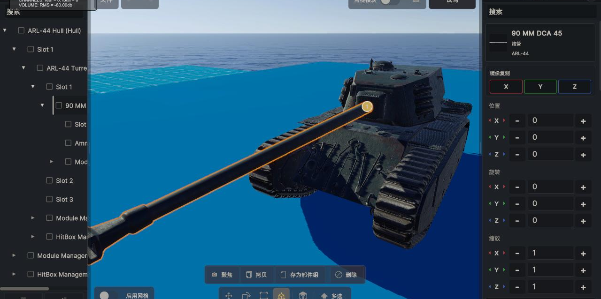

载具工坊火炮模拟
中文 | English
在仓库根目录运行以下命令，用本机 Unity MCP 回放本页示例。
python Docs/Manual/manual/tools/tutorials.py run gun-tutorial
载具工坊可以模拟火炮与炮弹，无需重新构建载具。选择已安装的火炮，设置装填 FireState，并配置炮弹子对象用于模拟。
1. 选择已安装的火炮
在工坊中打开载具，选择它已安装的火炮。工坊编辑的是该火炮的模拟条目，而不是另外新建一件武器。

2. 设置自定义装填 FireState
根据需要的表现选择装填 FireState：
| FireState | 需要配置的内容 |
|---|---|
| Simple | 使用 ReloadTime 的自定义装填 |
Advanced（Advance） |
advanceMaxSmallAmmo 是弹匣容量，advanceSmallReloadTime 是匣内两发间隔，advanceLargeReloadTime 是整匣补充时间。 |
| Drum | drumReloadTimes 逐项设置备份弹药的装填时间，drumFireDuration 设置开火间隔。 |
在右侧下滚到装填类型，填入选中模式显示的数值。试用弹夹炮时可把容量设为 3，小装填设为 2.5 秒，大装填设为 14 秒。容量较大时，可以在弹夹炮或弹鼓炮选项中隐藏成组的弹药图标。弹鼓炮允许在补充备弹期间发射已就绪的炮弹。用试驾确认实际节奏。
3. 配置炮弹子对象
展开火炮的炮弹子对象。使用 Import Default Bullets 复制游戏已有的炮弹配置，或点击 + 新增一种炮弹类型。然后编辑该炮弹的基础数据和模块模式覆盖项。
修改炮弹数据后，按 Recalculate Bullet Info，在当前弹种的调试区重新读表。支持德马尔模型的弹种会按游戏配置显示与射距、入射角有关的穿深估算。其他弹种使用自身参数。用同一距离和角度比较改前改后的结果，再在游戏里试射。
4. 在游戏中测试
在游戏中运行该载具，检查装填节奏、弹种选择以及配置的炮弹表现。模拟显示的调试穿深估算来自游戏内输入，属于估算值，应结合实际游戏内的表现来判断，而不是当作固定参考。
点击展开 MCP 操作点击收起 MCP 操作
[
{
"tool": "invoke",
"arguments": {
"path": "static:ShanghaiWindy.Core.AssetBundleManager/LuaEnv/DoString",
"args": [
"local data, core = CS.ShanghaiWindy.Core.Data, CS.ShanghaiWindy.Core\nlocal gun = data.DIYUserCustomizeGunProperty()\ngun:SetPropertyInfos()\nlocal function has(name)\n return gun:GetEditableFields(false):Contains(name)\nend\nassert(has(\"ReloadTime\") and not has(\"advanceMaxSmallAmmo\"))\ngun.fireState:SetValue(core.FireState.Advance)\ngun.advanceMaxSmallAmmo.isEnabled = true\ngun.advanceMaxSmallAmmo:SetValue(3)\nassert(gun.advanceMaxSmallAmmo:GetValue() == 3 and has(\"advanceSmallReloadTime\") and not has(\"drumReloadTimes\"))\ngun.fireState:SetValue(core.FireState.Drum)\nassert(has(\"drumReloadTimes\") and has(\"drumFireDuration\") and not has(\"ReloadTime\"))\nlocal shell = data.PenetrateBulletProperty()\nshell.name:SetValue(\"Tutorial AP\")\ngun.bulletPropertyWrapper:GetValue():Add(shell)\nassert(gun.bulletPropertyWrapper:GetValue().Count == 1 and not has(\"FirePowerMultiplier\"))\nassert(shell:IsDemarrePeneration() and not data.HEATBulletProperty():IsDemarrePeneration())\nreturn \"Verified Simple, Advance, Drum and workshop AP entry\"",
"docs-workshop",
"null"
]
},
"expect": {
"contains": "Verified Simple, Advance, Drum and workshop AP entry"
}
}
]
点击展开 MCP 操作点击收起 MCP 操作
先在测试车上选择已装的火炮，把 vehicle_rules 返回的火炮 ruleGuid 填入 gun。该回放验证模式字段和数值。
[
{
"tool": "vehicle_props",
"arguments": {
"ruleGuid": "${gun}"
},
"expect": {
"contains": "DIYUserCustomizeGunProperty"
}
},
{
"tool": "vehicle_set_props",
"arguments": {
"ruleGuid": "${gun}",
"json": "{\"fireState\":{\"value\":1},\"advanceMaxSmallAmmo\":{\"isEnabled\":true,\"value\":3},\"advanceSmallReloadTime\":{\"isEnabled\":true,\"value\":2.5},\"advanceLargeReloadTime\":{\"isEnabled\":true,\"value\":14}}"
},
"expect": {
"contains": "rebuilt"
}
},
{
"tool": "vehicle_props",
"arguments": {
"ruleGuid": "${gun}"
},
"expect": {
"contains": "\"advanceMaxSmallAmmo\":{\"isEnabled\":true,\"value\":3}"
}
}
]